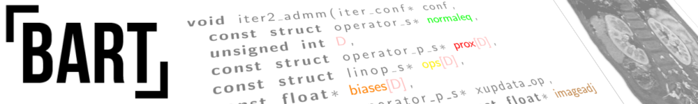
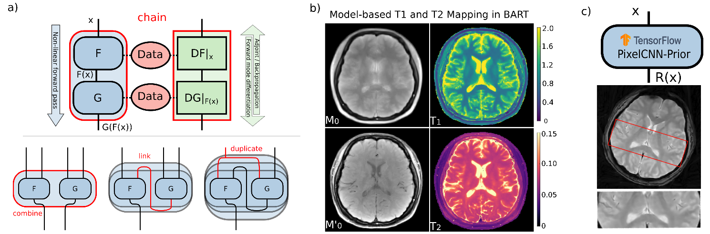

BART ISMRM 2021 Software Demo
Model-based Reconstruction meets Neural Networks: Non-linear Operators in BART

Figure: a) Non-linear operators in BART. b) Model-based reconstruction for quantitative MRI.
c) Wrapping TensorFlow graph into BART's non-linear operator for deep prior based reconstruction.
Outline
- Introduction: Non-linear operators in BART
- Non-linear operators for model-based reconstruction
- TensorFlow-Regularizer + BART Reconstruction
- Neural Networks in BART
All content is also available on GitLab: Software Demo: Jupyter Notebooks
Links
Event Page in the ISMRM program-at-a-glance
Acknowledgements
This work is supported by NIH Grant U24EB029240-01 and by the Niedersächsisches Vorab funding line of the Volkswagen Foundation.